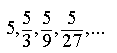
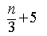
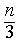
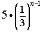
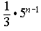
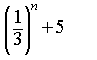

Item: tExplicitGeometric3b
Stem:
The first four terms of a geometric sequence are given below.
Choose the algebraic expression that represents the nth term in this sequence.






Key:
- Observable: 3.
Score: 1;
Evidence Value: 1.
-
Student:Right!
-
Teacher:The student got this item correct.
- Observable: 1.
Score: 0;
Evidence Value: 0.
-
Student:Sorry, that's not right. Since this is a geometric sequence, you repeatedly multiply by the common ratio to find successive terms. This means the formula for the nth term will involve the common ratio raised to an exponent.
-
Teacher:The student added the first term, instead of multiplying by it, so they may have confused this geometric sequence with an arithmetic sequence. Also the student may not understand how to express repeated multiplication by using exponents.
- Observable: 2.
Score: 0;
Evidence Value: 0.
-
Student:Sorry, that's not right. Since this is a geometric sequence, you repeatedly multiply by the common ratio to find successive terms. This means the formula for the nth term will involve the common ratio raised to an exponent.
-
Teacher:The student may have identified the common ratio as 1/3, but did not know how to use this information to find the nth term of this geometric sequence. The student may not understand how to express repeated multiplication by using exponents.
- Observable: 4.
Score: 0;
Evidence Value: 0.
-
Student:Sorry, that's not right. Since this is a geometric sequence, you repeatedly multiply by the common ratio to find successive terms. This means the formula for the nth term will involve the common ratio raised to an exponent. It looks like you have raised the first term to an exponent instead.
-
Teacher:In finding the nth term for this geometric sequence, the student raised the initial term to an exponent instead of raising the common ratio to an exponent. It may be that the student has memorized an incorrect formula for finding the nth term of a geometric sequence.
- Observable: 5.
Score: 0;
Evidence Value: 0.
-
Student:Sorry, that's not right, but you are on the right track. You are correct that the common ratio (1/3) does need to be raised to an exponent. But since this is a geometric sequence, you repeatedly multiply by the common ratio to find successive terms. This means that the first term is multiplied by the common ratio as well. So you should not add to the first term.
-
Teacher:In finding the nth term for this geometric sequence, the student added the initial term instead of multiplying by it. It may be that there is some confusion with arithmetic sequences, or it may be that the student has memorized an incorrect formula for finding the nth term of a geometric sequence.
Metadata:
Item Node: tExplicitGeometric3b,
Difficulty: 3.
Proficiencies: ExplicitGeometric.